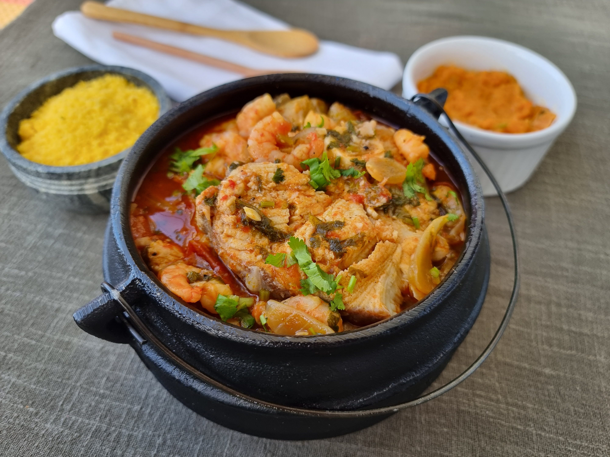

Espírito Santo
Comidas Típicas
Moqueca Capixaba - A moqueca capixaba é um ensopado à base de peixe e vegetais, temperado com azeite de oliva, urucum e coentro típico, receita originária do estado do Espírito Santo. Ao contrário da moqueca baiana, a versão capixaba é preparada sem azeite de dendê ou leite de coco. O resultado é um prato de sabor mais suave, cujo protagonista é o peixe.
Torta Capixaba - A Torta Capixaba é um dos pratos mais conhecidos da culinária do Espírito Santo, feita com bacalhau, camarão, siri e palmito entre os ingredientes, essa torta pode ser consumida durante todo ano no estado, mas é tradicional na Semana Santa

Muma de Siri - O siri é um dos ingredientes característicos do Espírito Santo, e desde a captura até o preparo do crustáceo, os capixabas mantêm tradições que vêm dos indígenas. Nesta receita entram tomate, cebola e um tempero que inclui o urucum, tipo de fruto típico da América Tropical.

Músicas do Espírito Santo
Congo
Diferente das demais, essa é uma manifestação da cultura capixaba, que une os instrumentais dos africanos e indígenas com a religiosidade católica dos portugueses. Nela, participam homens, mulheres e crianças, que utilizam de instrumentos musicais para tocar o que é considerado patrimônio imaterial do Espírito Santo
Fica Tudo Bem - Silva e Anitta
Essa música produzida pelo artista capixaba Silva juntamente com uma das mais famosas cantoras brasileira, Anitta, foi a música produzida por uma pessoa nascida no estado do Espírito Santo mais tocada do ano de 2019. O cantor recebeu o prêmio de Influenciador do Espírito Santo, no ano de 2022.
Lados Opostos - Brado
Essa música foi criada pelo artista independente Brado, nascido na cidade de Vitória, no Espírito Santo. Infelizmente, não há tantas pessoas que conhecem esse músico, principalmente fora de seu estado. Ele já lançou diversas músicas no seu spotify.